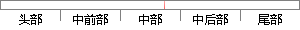

其中四个模块中：注册包括新用户的注册；
片段位置图

相似结果|
相似片段 1：后，才可以分别进入各功能模块。如果登录不成功，则需注册新用户，通过后方可进入各功能模块。患者信息管理模块：主要完成患者信息的管理功能，其中增删查改患者信息就包括注册新用户、对现有用户的信息管理（其中
相似片段 2：注册模块用户通过用户注册模块可以在统一身份认证服务中心注册账号。这个账号可以在所有使用统一认证服务并且具有相应访问权限的应用系统中使用。包括两部分：新用户注册、用户更新注册信息。用户注册和更新的过程如图
相似片段 3：模块包括用户名和密码编辑界面、以及新用户的注册界面。实时监控模块包括主界面、开机检测、机械手实时监控、仓库进货界面等。仿真系统模块包括系统的组建、系统的仿真界面等。设计过程中用到的控件主要有静态控件
相似片段 4：新用户必须注册新的用户账号才能登录本系统。首先用户需要在登录界面中选择新用户注册，’在新用户注册界厦中需要输入用户基本信息，其中包括用户名、密码、密码问题、密码答案、真实姓名、电子邮件等等。在填写
相似片段 5：新用户的注册，注册信息包括：用户名、密码、邮箱以及职业等。4．话动设计过程设计培训活动的四个框架，具体包括以下的因素；主题名称，关键概念，学习目标，对应标准、学习任务、专题名称、活动方式、活动时问，交互性，活动作品，评价方式，活动资源、活动环境，活动评价，活动步骤。
相似片段 6：的维护与更新。o干入移动客户麓图4-5移动客户端用例图图4—6移动影院订票系统功能结构4．4．1用户管理模块设计用户管理模块主要包括新用户注册功能和用户登录功能。●新用户注册为增强系统的安全性，用户需要
相似片段 7：Figure5-3TheSequeIlceDiagramofUserRegistrationModule用户注册模块时序图如图5．3所示，用户注册模块初始化功能所涉及到的对象包括如下：SignUpAction为新用户注册Action类；SignUpService为新用户注册服务类
|
※ 片段修改建议 ※
近似词参考：- 其中：此中 个中
- 包括：包罗 包孕 包含 囊括
系统自动生成语句：此中四个模块中：注册包罗新用户的注册；
注：本片段修改建议为系统自动生成，仅供参考。